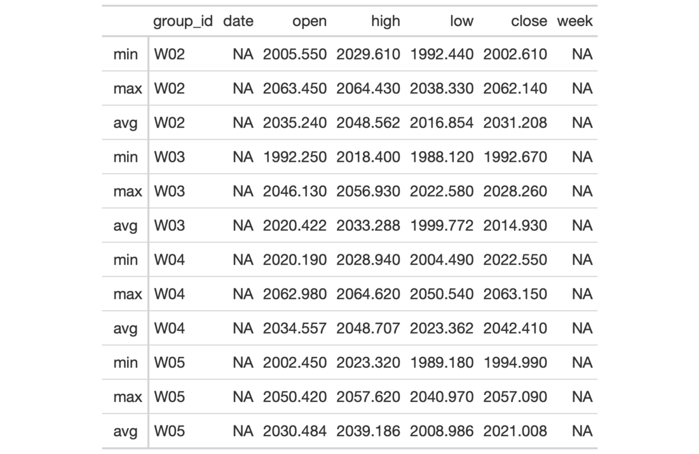

| extract_summary {gt} | R Documentation |
Get a list of summary row data frames from a gt_tbl object where summary
rows were added via the summary_rows() function. The output data frames
contain the group_id and rowname columns, whereby rowname contains
descriptive stub labels for the summary rows.
extract_summary(data)
data |
A table object that is created using the |
A list of data frames containing summary data.

13-5
Other Export Functions:
as_latex(),
as_raw_html(),
as_rtf(),
gtsave()
# Use `sp500` to create a gt table with
# row groups; create summary rows by row
# group (`min`, `max`, `avg`) and then
# extract the summary rows as a list
# object
summary_extracted <-
sp500 %>%
dplyr::filter(
date >= "2015-01-05" &
date <="2015-01-30"
) %>%
dplyr::arrange(date) %>%
dplyr::mutate(
week = paste0(
"W", strftime(date, format = "%V"))
) %>%
dplyr::select(-adj_close, -volume) %>%
gt(
rowname_col = "date",
groupname_col = "week"
) %>%
summary_rows(
groups = TRUE,
columns = c(open, high, low, close),
fns = list(
min = ~min(.),
max = ~max(.),
avg = ~mean(.)),
formatter = fmt_number,
use_seps = FALSE
) %>%
extract_summary()
# Use the summary list to make a new
# gt table; the key thing is to use
# `dplyr::bind_rows()` and then pass the
# tibble to `gt()`
tab_1 <-
summary_extracted %>%
unlist(recursive = FALSE) %>%
dplyr::bind_rows() %>%
gt()